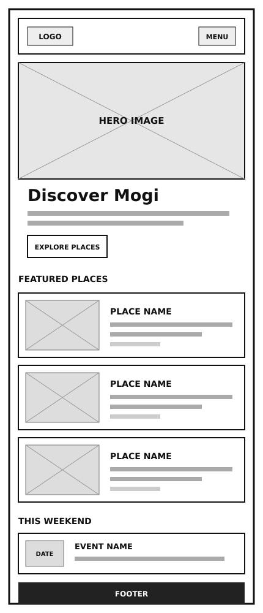
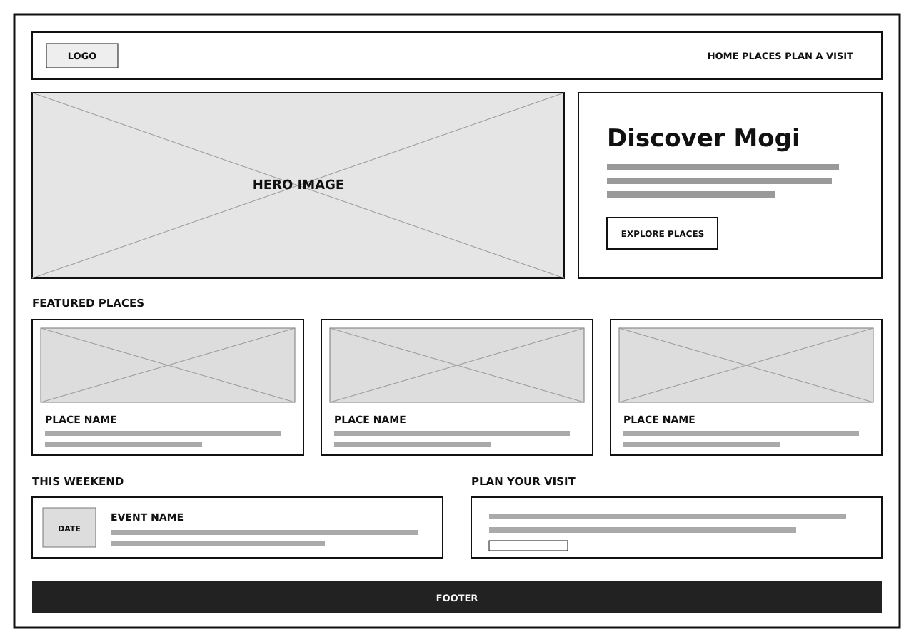

Forest Green
#173F35
Page header, footer, primary headings, and strong visual anchors.
WDD 231 · Individual Project
Project blueprint
This plan defines the name, purpose, audience questions, visual system, and responsive home-page structure for Mogi Discover.
Mogi Discover
The name combines the city’s familiar short name, “Mogi,” with an invitation to discover its parks, culture, food, and local experiences. It is short, memorable, and directly connected to the site’s purpose.
Optional domain concept: mogidiscover.com.br
Mogi Discover will help residents and visitors explore Mogi das Cruzes through a curated directory of attractions, cultural places, outdoor activities, food destinations, and practical visitor information.
These questions represent what people in the target audience may ask when they visit the site:
The palette is inspired by the green landscape and warm, earth-toned character of the region. These colors are also used throughout this site plan.
#173F35
Page header, footer, primary headings, and strong visual anchors.
#9C3D10
Section numbers, links, dividers, and small accent details.
#F7F3EA
Main page background and soft content areas.
#1B2723
Body copy and supporting text for comfortable reading.
Headings and navigation
Montserrat
Aa Bb Cc 0123
Used for page titles, section headings, navigation labels, and short calls to action.
Body copy and supporting text
Source Sans 3
Aa Bb Cc 0123
Used for paragraphs, lists, form labels, captions, and destination details.
The black-and-white sketches focus on structure and responsive content flow before color, photography, and detailed styling are applied.

